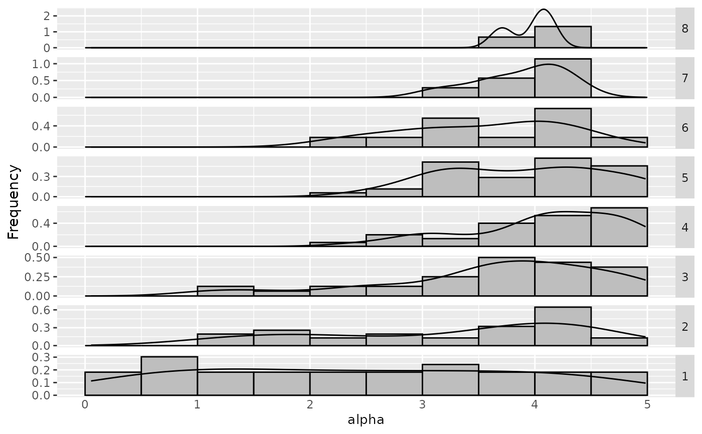
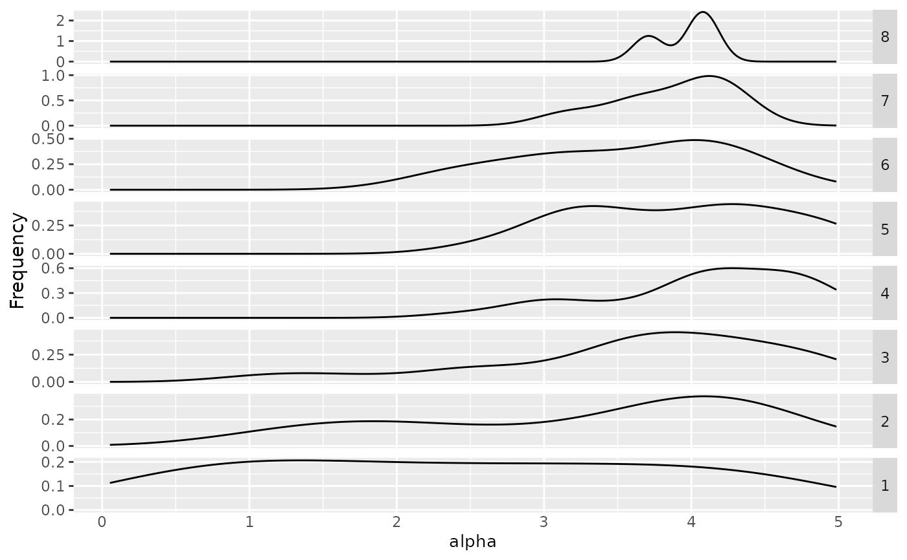

R/sampling_frequency_iteration.R
sampling_frequency_iteration.RdThe function will return a frequency plot used for categorical data (its values are string, show a bar plot) or numeric data (show a histogram and density plot) by each iteration
sampling_frequency_iteration(
irace_results,
param_name,
numerical_type = "both",
filename = NULL
)The data generated when loading the Rdata file created by irace
String, name of the parameter to be included (example: param_name = "algorithm")
String, (default "both") Indicates the type of plot to be displayed for numerical parameters. "density" shows a density plot, "frequency" shows a frequency plot and "both" show both frequency and density.
(character(1)) File name to save the plot, for example "~/path/example/filename.png".
Frequency and/or density plot
load(system.file(package="irace", "exdata", "irace-acotsp.Rdata", mustWork = TRUE))
sampling_frequency_iteration(iraceResults, param_name = "alpha")

# \donttest{
sampling_frequency_iteration(iraceResults, param_name = "alpha", numerical_type="density")

# }